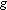

Высказана гипотеза
о существовании состояний физического континуума,
включающих области
с различной сигнатурой метрики и о возникновении
наблюдаемой Вселенной
и бесконечного числа других Вселенных в результате
квантовых переходов
с изменением сигнатуры метрики. Лагранжиан в такой
теории должен удовлетворять
условиям неотрицательности в областях с четной
сигнатурой. Сигнатура
здесь - число временных координат. Индуцированный
гравитационный лагранжиан
в конформно-инвариантной теории типа
Калуцы - Клейна,
по-видимому, удовлетворяет этому требованию и приводит к
эффективным уравнениям
теории тяготения макропространства,
совпадающим с уравнениями
общей теории относительности. Высказано
предположение о
существовании в нашей Вселенной наряду с наблюдаемым
(макроскопическим)
временным измерением двух или другого четного числа
компактифицированных
временных измерений. Предположено, что
образование евклидовой
области в центре черной дыры и при
космологическом
сжатии Вселенной (если оно предопределено динамикой)
является возможным
исходом гравитационного коллапса.
Обычно предполагается, что сигнатура метрики пространственно-временного континуума является его неотъемлемым физическим свойством, т.е. в каждой пространственно-временной точке метрический тензор имеет одно главное значение, соответствующее по знаку времени, и три главных значения противоположного знака, соответствующие пространству. Здесь и ниже сигнатура - число временных координат. В теориях типа Калуцы-Клейна число временных координат по-прежнему обычно предполагается равным 1, компактифицированное фактор-пространство считается чисто пространственным. Исключение из теории переходов с изменением сигнатуры метрики эквивалентно неравенству нулю детерминанта , 
В этой работе мы отказываемся от предположения об инвариантности сигнатуры метрики и рассматриваем состояния с различной сигнатурой. Во время переработки статьи я познакомился с работой А. Виленкина [1], в которой рассматривается рождение Вселенной Де Ситтсра (замкнутой «раздувающейся» Вселенной) в результате квантового перехода с изменением сигнатуры сферы S4, т.е. из состояния с дефинитной метрикой, а также содержатся ссылки на более ранние публикации аналогичных идей.
Обозначения. Q - размерность пространственно-временного физического континуума. Считаем Q > 4, принимая теорию типа Калуцы-Клейна. - число временных координат в данной области пространственно-временного континуума (сигнатура). Знаки главных значений метрического тензора, соответствующих времени, условимся считать отрицательными, знаки пространственных направлений - положительными. В наблюдаемой Вселенной, по-видимому, = 1 (см., однако, ниже), т.е. знаки главных значений (-, +, +, +). Области пространственно-временного континуума с
= 1 условимся обозначать буквой U - от слова Universe. Чисто пространственные области = 0 обозначаем Р - от имени древнегреческого философа Пармснида, рассуждавшего о мире без движения (у Пушкина: «Движенья нет - сказал мудрец брадатый... »). В квантовой механике слово «состояние» употребляется в двояком смысле: 1) обычно как совокупность значений физических величин в данный момент времени; 2) но иногда как совокупность значений физических величин в пространстве и времени. В данной работе, следуя большинству авторов, слово «состояние» употребляется в первом смысле - как совокупность значений величин на гиперповерхности размерности Q - 1 (коразмерности 1). Для совокупности значений величин в пространстве размерности Q используется термин «траектория».
В этой работе некоторые следствия гипотезы, допускающей значения сигнатуры а, не равные 1, обсуждаются в связи с так называемым «антропологическим принципом». В 1950-1970-х годах независимо несколькими авторами была высказана гипотеза, что наряду с наблюдаемой Вселенной существует бесконечное число «других» Вселенных, многие из них обладают существенно иными, чем «наша» Вселенная, характеристиками и свойствами; наша Вселенная и похожие на нее Вселенные характеризуются такими параметрами, что в них могли возникнуть структуры (атомы, молекулы, звезды и планетарные системы и т.д.). обеспечивающие развитие жизни и разума. Эта гипотеза снимает многие вопросы типа - почему мир устроен именно так, а не иначе - с помощью предположения, что есть иначе устроенные миры, но их наблюдение недоступно, во всяком случае сейчас. Некоторые авторы считают антропологический принцип неплодотворным и даже не соответствующим научному методу. Я с этим не согласен. Замечу, в частности, что требование применимости фундаментальных законов природы в существенно иных, чем в нашей Вселенной, условиях может иметь эвристическое значение для нахождения этих законов. Еще в 1917 голу П. Эренфест [2] отметил, что число измерений наблюдаемого пространства, равное 3, возможно, объясняется тем, что при ином числе измерений изменяется показатель степени в законе Кулона и невозможно существование атомов; это, конечно, аргументация в духе антропологического принципа. Одна из известных мне ранних работ принадлежит Дикке [3]; Я.Б. Зельдович упоминает еще более раннюю работу Идлиса (1959 г.); см. также [4]. В 1980 г. Я.Б. Зельдович высказал гипотезу о множественном образовании замкнутых Вселенных из первичного пустого мира Минковского в результате процесса «отпочкования» [5] (см.также [6]).
Данная работа лежит в круге идей антропологического принципа; так же как в [5], предполагается образование замкнутых Вселенных, но из иного первичного субстрата - пространства с дефинитной метрикой.
В работе высказывается предположение, что, возможно, и наша Вселенная имеет иную сигнатуру, чем обычно принимается, а именно, что в ней наряду с наблюдаемым макроскопическим временным измерением существуют компакти-фицированные временные измерения. Эта гипотеза обсуждается в конце разд. 2.
§2. Динамический принцип. Проблема интерпретации. Гипотеза о сигнатуре
наблюдаемой Вселенной
Прояснению принципиальных вопросов, рассматриваемых
в этом разделе, способствовало ознакомление во время работы над статьей
с препринтом Хартля и Хоукинга [7] по рекомендации АД. Линде.
Возможная интерпретация (не единственная)
квантовой теории в применении ко Вселенной в целом - сравнение вероятностей
различных состояний B1, В2,
..., определяемых на некоторой выделенной гиперповерхности В, при
наличии измерения состояния А0 на некоторой
другой гиперповерхности А. Амплитуда вероятности состояний Вi,
определяется квантовой суперпозицией (функциональным интегрированием) амплитуд
траекторий, «натянутых» на состояния Вi, и
А0, т.е. удовлетворяющих на В и А
граничным условиям для Q - 1-мерного метрического
тензора и полей материи.
Траектории считаем непрерывными, но предполагаем,
что они могут обладать различной топологией и иметь различную сигнатурную
структуру.
На рис.1 в качестве наглядной иллюстрации
изображены двумерные траектории, натянутые на два одномерных кольца А
и В. Траектории 1 и 2 отличаются своей топологией, при этом разные
одномерные сечения одной и той же траектории 2 имеют различную одномерную
топологию (кольцо, два кольца, восьмерка). Траектории 3,4,5 отличаются
от 1 и 2 сигнатурной структурой; при этом разные
сечения имеют разную сигнатурную структуру. По-видимому, граница U -области с Р-областью должна быть со стороны U-области пространственно-подобной, а граница с областью = 2 - времениподобной.
Различия в сигнатурной структуре траектории представляются столь же естественными, как различия в топологической структуре. Менее ясно, есть ли необходимость рассматривать состояния с
Заметим, следуя [7], что временное расстояние между гиперповерхностями нс задастся и не имеет в квантовой теории строгого смысла. Однако для фиксированных состояний А0 и Bi можно говорить о наиболее вероятном расстоянии по времени.
Функциональное интегрирование должно проводиться по полям материи (обозначенным ) и компонентам метрического тензора и включать суммирование по дискретным характеристикам натянутых траекторий. Функциональный интеграл (в несколько условной записи, игнорирующей проблемы калибровки, связи и меры) имеет вид
Здесь и всюду - детерминант .
Показатель экспоненты - выражение чисто мнимое при
< 0 (
= 1, 3,...) и действительное при
> 0 ( =
0, 2, 4,...). По-видимому, это - необходимое следствие аналитической
структуры теории с переменной сигнатурой.
Для сходимости интеграла в областях, где
> 0 ( -
четное), необходимо потребовать в них L
0. Это нетривиальное ограничение, имеющее, возможно,
эвристическое значение для построения теории. В частности, стандартное
выражение для лагранжиана гравитационного поля Эйнштейна - Гильберта Lg  R, линейное по скаляру кривизны, не удовлетворяет этому требованию.
Теория с квадратичным (или более высокой четной степени) лагранжианом,
определенном в четырехмерном пространстве-времени (т.е. без компактифицированных
измерений), противоречит эксперименту, не воспроизводится даже закон тяготения
Ньютона. Так, при Lg
R, линейное по скаляру кривизны, не удовлетворяет этому требованию.
Теория с квадратичным (или более высокой четной степени) лагранжианом,
определенном в четырехмерном пространстве-времени (т.е. без компактифицированных
измерений), противоречит эксперименту, не воспроизводится даже закон тяготения
Ньютона. Так, при Lg  сила гравитационного взаимодействия двух тел не зависит от расстояния между
ними. Отмеченная трудность отсутствует в теориях типа Калуцы - Клейна,
что является дополнительным аргументом в их пользу. В этих теориях предполагается,
что на современной стадии развития Вселенной характерные размеры (радиусы)
компактификации малы по сравнению с характерными размерами макропространства
t,... Интегрируя
лагранжиан гравитационного поля по координатам компактифицированного фактор-пространства,
находим эффективный лагранжиан в данной точке макропространства: в первом
приближении он содержит только постоянное слагаемое (космологическую постоянную)
и слагаемое, линейное по скаляру кривизны макропространства:
сила гравитационного взаимодействия двух тел не зависит от расстояния между
ними. Отмеченная трудность отсутствует в теориях типа Калуцы - Клейна,
что является дополнительным аргументом в их пользу. В этих теориях предполагается,
что на современной стадии развития Вселенной характерные размеры (радиусы)
компактификации малы по сравнению с характерными размерами макропространства
t,... Интегрируя
лагранжиан гравитационного поля по координатам компактифицированного фактор-пространства,
находим эффективный лагранжиан в данной точке макропространства: в первом
приближении он содержит только постоянное слагаемое (космологическую постоянную)
и слагаемое, линейное по скаляру кривизны макропространства:
Мы не рассматриваем тут механизма, приводящего
к компактификации. Заметим только, что радиусы компактификации, если они
постоянны в макропространстве, должны определяться какими-либо размерными
параметрами лагранжиана типа затравочных масс; теория не обладает при этом
конформной инвариантностью, и, по-видимому, возникают трудности с нсдефинитностью
лагранжиана и расходимости. (Может быть, при каких-то частных значениях
параметров трудности отсутствуют.) Представляют интерес альтернативные
варианты теории, в которых лагранжиан конформно-инвариантен, радиусы компактификации
зависят от макроскопических координат, сохраняя, однако, постоянные отношения.
При этом достаточно плавные изменения радиусов компактификации будут не
наблюдаемы, поскольку все размерные характеристики эффективного лагранжиана
определяются масштабом компактификации; в частности, теория Бранса -Дикке
сводится к теории Эйнштейна, и выполняется принцип эквивалентности (ср.
[8]). В качестве примера рассмотрим индуцированный (т.е. порожденный
квантовыми флуктуациями полей материи, ср. [9]) гравитационный лагранжиан
в пространстве Q = 4q с числом измерений, кратным 4; поля
материи - безмассовые и удовлетворяющие конформно-инвариантным уравнениям.
Из соображений размерности и конформной инвариантности следует предполагать,
что индуцированный лагранжиан описывается выражением вида Lg  ,
где I - квадратичный инвариант тензора Вейля (возможно, что более
точное выражение включает и другие инварианты); соответствующий коэффициент
безразмерен и, как можно надеяться, для суперсимметричных теорий конечен.
Обозначив через
,
где I - квадратичный инвариант тензора Вейля (возможно, что более
точное выражение включает и другие инварианты); соответствующий коэффициент
безразмерен и, как можно надеяться, для суперсимметричных теорий конечен.
Обозначив через  радиус компактификации,
имеем для эффективного лагранжиана макропространства (М - масштаб
эффективных масс частиц mi):
радиус компактификации,
имеем для эффективного лагранжиана макропространства (М - масштаб
эффективных масс частиц mi):
До сих пор в нашем изложении в основном предполагалось
(и предполагается далее, в частности в разд. 3), что сигнатура нашей Вселенной
= 1. Однако представляет интерес рассмотреть варианты
строения Вселенной (и их следствия для теории элементарных частиц!), в
которых >
1. По всем временным координатам, кроме одной, при этом предполагаем
компактификацию.
В нашей Вселенной действие траектории определяет
фазу ее комплексной амплитуды. Поэтому в соответствии с (1)
- нечетное число, а число компактифицированных координат - четное. Заметим,
что знак детерминанта g под корнем в (1) не может быть изменен произвольно
(например, в связи с недефинитностью лагранжиана некоторых частиц в пространствах
с нечетной сигнатурой).
Важным принципиальным вопросом является соотношение
обсуждаемой гипотезы с принципом причинности. Под принципом причинности
в релятивистских динамических теориях (не учитывающих эффектов квантовой
гравитации) понимается следующее утверждение (это одна из возможных формулировок):
состояние в некоторой пространственной области максимально определено состоянием
на пространственном сечении внешней огибающей обращенных в прошлое световых
конусов с вершинами на границе области, либо световых конусов, обращенных
в будущее, но не двух таких состояний сразу («максимально определено»
тут означает, что состояние за пределами огибающей не влияет на состояние
в области). В квантовой гравитации принцип причинности в значительной степени
обесценивается, так как метрика, а значит и огибающая световых конусов,
различны для разных траекторий, суперпозиция амплитуд которых определяет
состояние.
Особенность сигнатуры
> 1, в отличие от обычно принимаемой сигнатуры
= 1, заключается в том, что при этом уже в классической
теории (и для отдельных траекторий в квантовой теории) нет двух различных
направлений светового конуса, т.е. локально нет разделения прошлого от
будущего. При >
1 световой конус делит пространство направлений лучей только на
2 области - пространственно-подобную и времениподобную, а не на 3 области,
как в случае
= 1. Топология направлений лучей светового конуса (топология пересечения
конуса с единичной сферой SQ - 1 в
Q -пространстве) в случае
> 1 -прямое произведение  -
это односвязное пространство. При
= 1 сфера SQ - 1 вырождается
в две точки, конус двусвязный пересекает сферу SQ - 1
по двум сферам
-
это односвязное пространство. При
= 1 сфера SQ - 1 вырождается
в две точки, конус двусвязный пересекает сферу SQ - 1
по двум сферам
SQ - 2, выделяя три области направлений
- в будущее, в прошлое и пространственные направления.
Однако свойство глобальной упорядоченности
гиперповерхностей размерности Q - 1 по макровремени при предположенной
компактификации по всем временным координатам, кроме одной, сохраняется
при любых значениях сигнатуры. Поэтому можно предполагать, что отсутствие
локальной упорядоченности при
> 1 не сказывается в макроскопических процессах с
участием частиц с энергиями, много меньшими обратных радиусов временной
компактификации (в соответствующих единицах). Если радиусы временной компактификации
порядка или меньше планковской длины, то эффекты квантовой гравитации скажутся
при таких же или меньших расстояниях.
§3. P-U-переход
Рассмотрим геометрию Q -пространства
вблизи границы .Р-области (
= 0) и U-области (
= 1). Выберем координаты а;о, ..., ZQ-I таким образом,
что границе областей Р и U соответствует значение  = а. Предполагаем, что для классического решения
вблизи границы областей
= а. Предполагаем, что для классического решения
вблизи границы областей
При
В случае нашей Вселенной размерность М = 3, это - или сфера S3,
или тор T3 = S1
S S1
S1, или S2
S1. Размерность К равна Q-1-M,
по своей топологической структуре К - прямое произведение сфер разных
размерностей и, возможно, замкнутых топологических пространств более общего
типа (например, в двумерном случае с p-«ручками»,
2 < p <  ).
).
Предполагается, что на ранней стадии эволюции
Вселенной пространство К сжимается (компактифицируется), а М
расширяется, образуя наблюдаемое макроскопическое пространство. К
- фактор-пространство теории Калуцы - Клейна. В конформно-инвариантных
вариантах теории, как я отметил выше, радиусы K-пространства формально
переменны, возможно растут, но на современной стадии эволюции нашей Вселенной
остаются много меньше характерных размеров макропространства, их
плавные изменения могут быть устранены конформным преобразованием.
Решение (2) имеет разрыв непрерывности .
Квантовые траектории должны удовлетворять требованиям непрерывности динамических
переменных, в их числе компонент метрического тензора. Качественный вид
непрерывных траекторий ( )
с изменением сигнатуры показан на рис.2 штрихами. В области ширины порядка
l непрерывная траектория не может удовлетворять классическим уравнениям,
т.е. имеет место квантовый переход.
)
с изменением сигнатуры показан на рис.2 штрихами. В области ширины порядка
l непрерывная траектория не может удовлетворять классическим уравнениям,
т.е. имеет место квантовый переход.
В каждой из областей Р и U особенность (2) может быть устранена преобразованием координат.
Переменные y и
t принимают как положительные, так и отрицательные
значения. Классическое решение (2) для Р-области в переменных y
может быть расширено на положительные и отрицательные значения y
, а классическое решение для Р-области может быть расширено
на положительные и отрицательные значения t. Квантовые
переходы с изменением сигнатуры Вселенной (так же как топологии) с наибольшей
вероятностью могут происходить при минимальных пространственных размерах
Вселенной. Если описанная картина имеет отношение к нашей Вселенной, то
при экстраполяции се наблюдаемого состояния в далекое прошлое мы должны
предполагать суперпозицию состояния Вселенной до момента максимальной плотности
и состояния с дефинитной метрикой. Для пояснения этой ситуации можно воспользоваться
аналогией с квантово-механической задачей об одномерном движении волнового
пакета в пространстве, разделенном потенциальным барьером. Пусть в момент
времени >
0 состояние описывается волновым пакетом, причем групповая скорость
> 0 (движение от барьера). Тогда для
< 0 экстраполированное назад по времени решение
уравнения Шредингера представляет собой суперпозицию двух когерентных состояний
- волнового пакета справа от барьера и волнового пакета слева от барьера.
Оба пакета при t < 0 движутся к барьеру и при t
= 0 сливаются в один пакет, уходящий направо. Пакет справа от барьера
является аналогом U-состояния, пакет слева - Р-состояния.
Аналогия не точна, так как в Р-области нет времени.
Состояние Вселенной с минимальными пространственными
размерами, возможно, является состоянием «ложного вакуума». В соответствии
с описанной выше картиной решение может быть продолжено в будущее и прошлое
(в окрестности «нулевой» точки, но по закону «цепной линии» ch(t
/)). Вакуумное состояние,
в том числе состояние ложного вакуума, обладает минимальной энтропией.
Поэтому энтропия возрастает при удалении от вакуумной точки в прошлое и
будущее, т.е. имеет место «поворот стрелы времени». Мыслимы и другие варианты
реализации поворота стрелы времени, см. [10].
В заключение этого раздела сделаем замечание,
относящееся к черным дырам и космологическим коллапсам Вселенной. Возможно,
U - Р-переход имеет место при гравитационном коллапсе и является
его исходом (или одним из исходов, альтернативный исход - расширение в
«другое» пространство, классическое решение этого типа известно для заряженной
черной дыры). От компактификации отвлечемся. Предполагаем, что в центре
черной дыры (для определенности - образовавшейся при симметричном гравитационном
коллапсе и затем испарившейся по Хоукингу) может существовать четырехмерная
Р-область, имеющая пространственно-подобную трехмерную замкнутую
границу. Р-область сферически-симметрична и вытянута вдоль пространственно-подобной
оси Т-области шварцшильдовского решения (которая в нашей терминологии
является U-областью). Образование аналогичной Р-области предполагаем
возможным при космологическом коллапсе замкнутой Вселенной (если ее динамика
предопределяет смену расширения сжатием), после одного или нескольких циклов
расширения-сжатия. Конечно, внутри P-области опять возможны включения
с другими сигнатурами.
Различные области Q -пространства могут отличаться друг от друга дискретными и непрерывными параметрами. В духе антропологического принципа считаем, что наблюдаемая Вселенная выделена совокупностью значений параметров, благоприятных для развития жизни и разума. В частности, возможно, сигнатура (равная 1 или другому нечетному числу) является одним из таких параметров.
Для Вселенной с данной сигнатурой в качестве следующего дискретного параметра мы должны рассмотреть размерность (число измерений) компактифициру-ющегося фактор-пространства К и размерность макропространства M = Q - - K, не обязательно равную 3. Эта возможность, следующая из гипотезы компак-тификации, - естественная реализация идеи [4] о возникновении Вселенных с различным числом пространственных измерений М, по-видимому, остаются в силе и аргументы [2] о причине выделенности «нашего» случая М = 3.
Дискретными параметрами являются также топологические характеристики границы областей Р и U. Дискретные параметры определяют эффективный лагранжиан макропространства.
Непрерывными параметрами являются начальные значения характеристик полей материи и начальных нарушений симметрии границ перехода. Эти параметры вместе с дискретными параметрами определяют эволюцию Вселенной.
Как известно, космологическая постоянная = 0 или аномально мала, причем, что особенно удивительно, не во внутренне-симметричном состоянии «ложного» вакуума, а в состоянии «истинного» вакуума с нарушенными симметриями. Малость или равенство нулю - это один из основных факторов, обеспечивающих длительность существования Вселенной, достаточную для развития жизни и разума. Поэтому естественно попытаться привлечь для разрешения проблемы космологической постоянной антропологический принцип.
Если малое значение космологической постоянной определяется «антропологическим отбором», то оно обусловлено дискретными параметрами. При этом либо точно равна нулю в каком-то варианте, либо чрезвычайно мала. В этом последнем случае следует предполагать, что число вариантов набора дискретных параметров достаточно велико, так что спектр значений в окрестности точки = 0 достаточно «плотный». Это, очевидно, требует большого значения размерности К компактифицированного пространства или (и) наличия в неко-торых топологических сомножителях сложной топологической структуры (типа большого числа «ручек»).
Заметим в заключение, что в пространстве Р следует рассматривать бесконечное число U -включений (для всей совокупности траекторий или даже для одной траектории); при этом параметры бесконечного числа из них могут быть сколь угодно близкими к параметрам наблюдаемой Вселенной. Поэтому можно предполагать, что число похожих на нашу Вселенных, в которых возможны структуры, жизнь и разум, - бесконечно. Это не исключает того, что жизнь и разум возможны также в бесконечном числе существенно иных Вселенных, образующих конечное или бесконечное число классов «похожих» Вселенных, в том числе Вселенных с иной, чем наша, сигнатурой.
В работе высказана и обсуждается гипотеза о существовании траекторий физического пространственно-временного континуума с различными значениями сигнатуры метрики. По-видимому, в теории, допускающей траектории с четной сигнатурой, лагранжиан в областях с такой сигнатурой не может быть отрицательным. Это, вместе с требованием соответствия ОТО, существенно ограничивает допустимый класс теорий. Индуцированная нелинейная гравитация в теории типа Калуцы - Клейна с числом измерений, кратным 4, и полями материи с конформно-инвариантным лагранжианом рассматривается в качестве примера, удовлетворяющего этим требованиям.
Предыстория наблюдаемой Вселенной, согласно гипотезе, является квантовой суперпозицией квазиклассичсской траектории с обращенной стрелой времени и траекторий с квантовыми переходами, включающими области с дефинитной метрикой, а также разнообразные области с обычной сигнатурой = 1 и с другими сигнатурами = 2,3... и т.д. В работе предложено возможное объяснение аномальной малости космологической постоянной с использованием антропологического принципа. Это объяснение не зависит от гипотезы о переходах с изменением сигнатуры метрики.
В работе высказано предположение, что сигнатура наблюдаемой Вселенной в действительности не равна 1 и что в ней имеется четное число дополнительных компактифицированных временных измерений. Обсуждается возможность согласования этого предположения с принципом причинности.
Высказано предположение об образовании Р-области при гравитационном коллапсе в качестве его исхода или одного из возможных исходов.
Я благодарю Д.А. Киржница и АД. Линде за очень полезное обсуждение, за помощь в ознакомлении с важными работами и при подборе ссылок на литературу. Я благодарю за помощь мою жену Е.Г. Боннэр.
Физический институт им. П.Н.Лебедева Поступила в редакцию
Академии наук СССР 14. III. 1984
Литература
[1] A. VUenkin, Phys. Rev. D 27, 2848
(1983).
[2] P. Ehrenfest, Proc. Amsterdam Acad.
20, 200 (1917).
[3] R.N. Dicke, Nature 192, 3440 (1961).
[4] B.J. Carr and M.J. Ress, Nature
278, 605 (1979); И.Л. Розентадь,
УФН 131,
239 (1980). A.D. Linde, in: The Very Early Universe,
ed. G.
Gibbons, S. Hawking, and S. Siklos, Cambridge Univ. Press,
1983,
p.205.
[5] Я.Б. Зельдович, Письма в Астрон.
ж. 7, 579 (1981).
[6] П.И. Фомин, ДАН УССР 9А, 831 (1975);
R. Brout, F. Englen, and
E. Gunzig,
Ann. Phys. (N.Y.) 115, 78 (1978); К. Sato, H. Kodama,
M. Sasaki,
and K. Maeda, Phys. Lett. В 108, 103 (1982); L.P.
Grishchuk
and Ya.B. Zeidovich, in: Quantum Structure of
Space
and Time, ed. M. Duff and C. Isham, Cambridge Univ.
Press,1982,
p. 409.
[7] J.B. Hartle and S.W. Hawking, Phys.
Rev. D 28, 2960 (1983).
[8] А.Д. Сахаров, Письма в ЖЭТФ 20,
189 (1974).
[9] А.Д. Сахаров, ДАН СССР 177, 70
(1967).
[10] А.Д. Сахаров, ЖЭТФ 93, 1233 (1982).